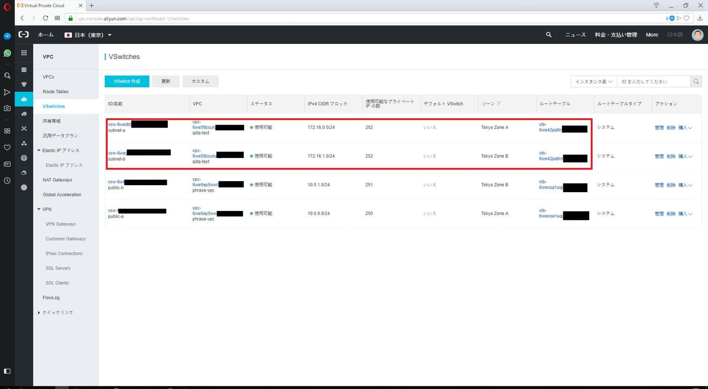
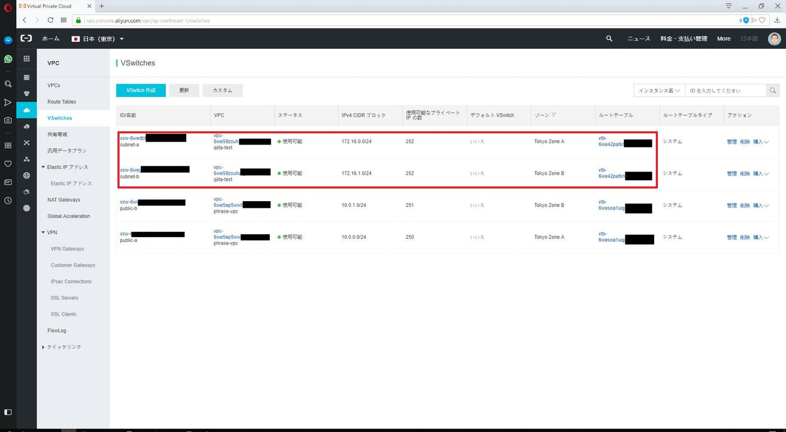
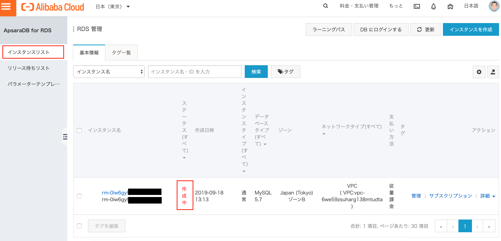
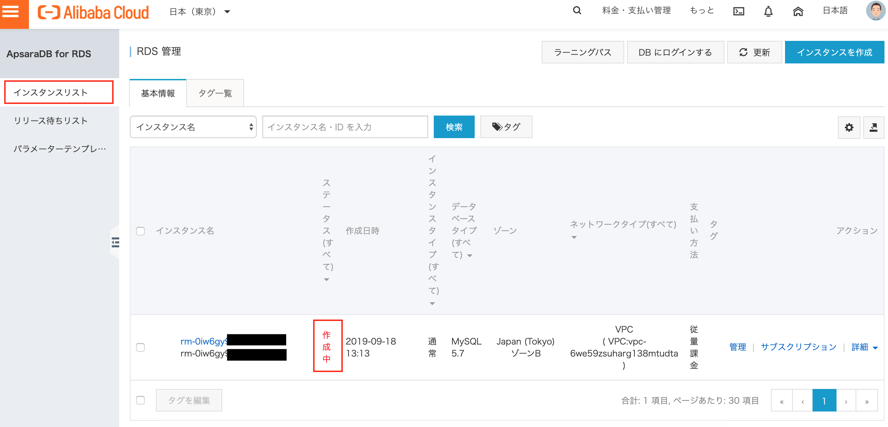
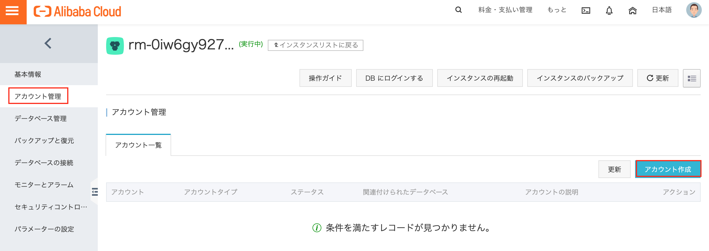
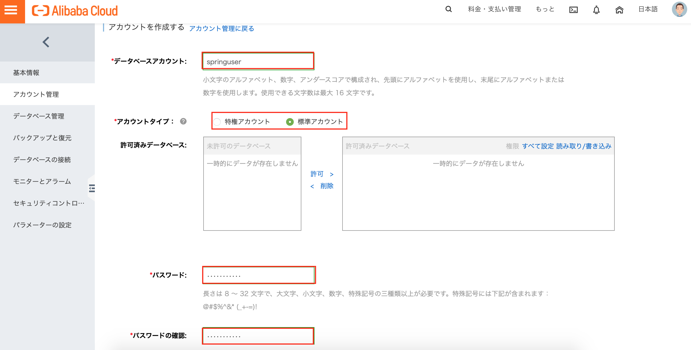
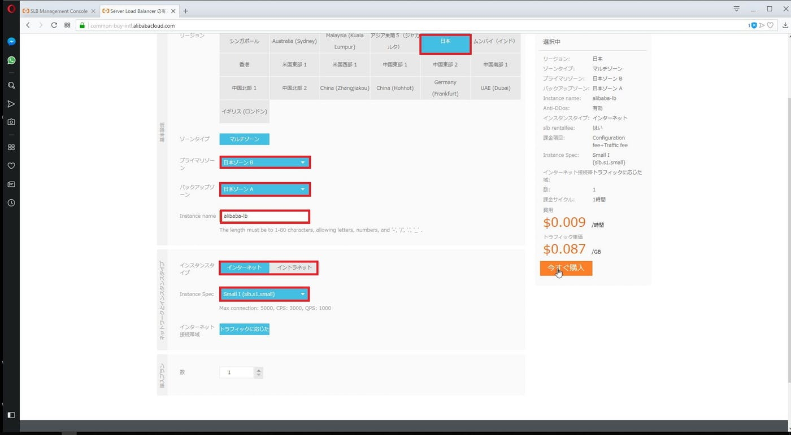
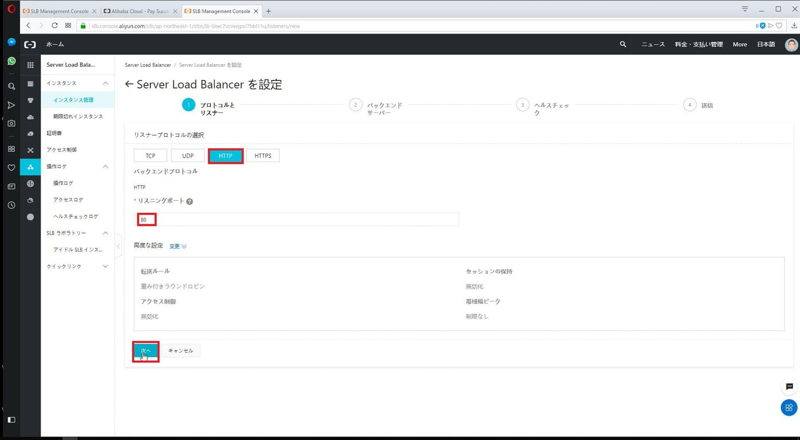
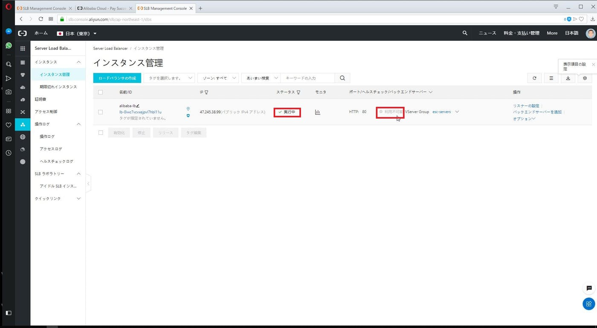
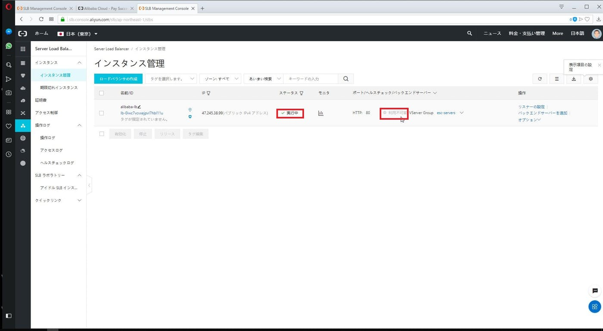

ECSとSpringBootの構築例
目次
- ECSとSpringBootを用いたWebアプリケーション構築の流れ
id=“VPC”>
1. VPCを用いたネットワークセグメント作成
Alibaba Cloudで、VPCとそれに付随するサブネット(VSwitchと呼ばれる)を作成したいと思います。
1-1. サービスの選択
ログイン後のコンソールで、「Virtual Private Cloud」を選択します。

1-2. VPCの作成
「VPCの作成」をクリックします。
 以下のVPCパラメータを入力します。
以下のVPCパラメータを入力します。
- VPC名
- IPv4 CIDR ブロック

1-3. VSwitchの作成
続けて同じ画面で、VSwitchと呼ばれるサブネットを作成します。 パラメータとしては以下の3つを入力、アベイラビリティゾーン分ける為、計2つのVSwitchを作成します。
- VPC名
- アベイラビリティゾーン
- IPv4 CIDR ブロック

 「OK」をクリックした後、「完了」をクリックします。
「OK」をクリックした後、「完了」をクリックします。

1-4. VPCとVSwitchの確認
「完了」をクリック後、VPCが作成されている事が確認できます。
 また、VSwitchのダッシュボードより、VSWitchが作成されている事も確認できます。

また、VSwitchのダッシュボードより、VSWitchが作成されている事も確認できます。

2. ECSを用いた仮想マシンの作成
Alibaba CloudのECSにおける仮想マシン作成手順を記します。また、AWSに知見のある方向けに、AWSとの違いも一部記します。
2-1. ECSサービスの選択
ログイン後のコンソールで「Elastic Compute Service」（以下ECS）をクリックします

{kind=link}
ECSダッシュボード画面で「インスタンス」をクリックします
※AWSとの違い: ECSダッシュボード画面では全リージョンのインスタンスの利用状況が表示される

2-2. リージョン確認
インスタンス画面で初めてリージョンが確認できるので「日本（東京）」である事を確認します

2-3. インスタンス作成開始
「インスタンスの作成」をクリックします

2-4. パラメータ入力
以下パラメータを入力して、「次のステップ：ネットワーク」をクリックします
- サブスクリプション（AWSでいうリザーブドインスタンス）か従量課金か
- アベイラビリティゾーン（東京はap-northeast-1）
- インスタンスタイプ
- インスタンスOS
- ルートディスクの種類とサイズ


以下パラメータを入力して、「次のステップ：システム構成」をクリックします
- 所属するVPCとVSwitch(AWSでいうサブネット)
- パブリックIPの割り当て
- アタッチするセキュリティグループと主要プロトコルの許可設定

以下パラメータを入力して、「次のステップ：グループ化」をクリックします
- インスタンスにアクセスする為の秘密鍵もしくはパスワードを指定します
※AWSとの違い：デフォルトだと秘密鍵・パスワード共に指定なし - コンソール上のインスタンス名と説明、インスタンスOS内部のホスト名を入力します

タグ名とタグ値を入力して、「次のステップ：プレビュー」をクリックします

2-5. インスタンス作成の完了
「ECS SLAと利用規約に同意します」にチェックを入れて、「インスタンスの作成」をクリックします

2-6. 作成されたインスタンスの確認
有効と表示されたら、「コンソール」をクリックして、当該インスタンスが作成されている事を確認します


パブリックIP/EIPを割り当てている場合は、IPアドレスの列にグローバルIPアドレスが表示されます

3. RDSを用いたMySQLインスタンスの作成
Alibaba CloudのRDSを用いて、ECSのアプリケーションから接続するMySQLインスタンスを作成します。流れとしては以下となります。
- サービスの選択
- MySQLインスタンスの起動
- ネットワーク許可設定
- データベースユーザの作成
- データベースの作成と権限付与
3-1. サービスの選択

3-2. MySQLインスタンスの起動
インスタンスの作成をクリックします。

作成画面にて、リージョン/ゾーン、データベースエンジン、インスタンスタイプ、ストレージ容量、VPC/VSwitch を選択します。


 「いますぐ購入」をクリックして、利用規約に同意にチェックをして、「今すぐ支払いをクリックします。
「いますぐ購入」をクリックして、利用規約に同意にチェックをして、「今すぐ支払いをクリックします。


購入ができたら、Consoleをクリックして、Home画面より再びRDSを選択して、インスタンスリストより当該MySQLインスタンスが「作成中」となっている箏を確認します。
 

RDS インスタンスが「実行中」になったら、そのインスタンスIDをクリックして、詳細を確認できます。

3-2. ネットワーク許可設定
インスタンス立ち上げただけではRDSにアドレスが付与されません。その為、インスタンスの詳細より、「ホワイトリストの設定」をクリックして、ネットワーク許可設定を施す事で、アドレスが付与されて、接続可能となります。

「セキュリティコントロール」のメニューに移動するので、「ホワイトリストグループを作成」をクリックします。

ECS/RDSインスタンスが所属するVPCのネットワークセグメント（172.16.0.0/12）を指定します。

ホワイトリストが正しく設定された事を確認します。

3-3. データベースユーザの作成
次に「アカウント管理」メニューをクリックして、アカウントを作成します。 
まずは特権ユーザである「root」というアカウントを作成しました。（必須ではない）


次に同じ容量で「springuser」というアカウントを作成しました。「許可済みデータベース」は、まだデータベースを作成していないので、選択不要です。


3-4. データベースの作成と権限付与
最後に「データベースの管理」よりデータベースを作成します。
 任意のデータベース名（デモアプリの仕様上ここではdb_example）を入力します。そして、「許可されたアカウント」と「アカウントタイプ」にて先程作ったユーザに読み取り書き込み権限を付与します。
任意のデータベース名（デモアプリの仕様上ここではdb_example）を入力します。そして、「許可されたアカウント」と「アカウントタイプ」にて先程作ったユーザに読み取り書き込み権限を付与します。
 そのまま作成して、正常に「実行中」となっている事を確認します。
そのまま作成して、正常に「実行中」となっている事を確認します。

これによりECS上からMySQLへアクセス可能となりました。
4. OS上でのSpringBootの実装と接続確認
ECSのCentOS上で、簡単なSpringbootアプリケーションを実装します。
4-1. JavaとGitのインストール
まずは実行環境で必要なツールをパッケージインストールします。
[root@iZ6we1q7wbpd4lko5h41ueZ ~]# yum install -y java-1.8.0-openjdk-devel
読み込んだプラグイン:fastestmirror
インストール処理の設定をしています
Determining fastest mirrors
依存性の解決をしています
--> トランザクションの確認を実行しています。
---> Package java-1.8.0-openjdk-devel.x86_64 1:1.8.0.222.b10-0.el6_10 will be インストール
--> 依存性の処理をしています: java-1.8.0-openjdk = 1:1.8.0.222.b10-0.el6_10 のパッケージ:
# 中略
インストール:
java-1.8.0-openjdk-devel.x86_64 1:1.8.0.222.b10-0.el6_10
依存性関連をインストールしました:
alsa-lib.x86_64 0:1.1.0-4.el6 atk.x86_64 0:1.30.0-1.el6 avahi-libs.x86_64 0:0.6.25-17.el6
cairo.x86_64 0:1.8.8-6.el6_6 cups-libs.x86_64 1:1.4.2-81.el6_10 fontconfig.x86_64 0:2.8.0-5.el6
freetype.x86_64 0:2.3.11-17.el6 gdk-pixbuf2.x86_64 0:2.24.1-6.el6_7 giflib.x86_64 0:4.1.6-3.1.el6
gnutls.x86_64 0:2.12.23-22.el6 gtk2.x86_64 0:2.24.23-9.el6 hicolor-icon-theme.noarch 0:0.11-1.1.el6
jasper-libs.x86_64 0:1.900.1-22.el6 java-1.8.0-openjdk.x86_64 1:1.8.0.222.b10-0.el6_10 java-1.8.0-openjdk-headless.x86_64 1:1.8.0.222.b10-0.el6_10
jpackage-utils.noarch 0:1.7.5-3.16.el6 libICE.x86_64 0:1.0.6-1.el6 libSM.x86_64 0:1.2.1-2.el6
libX11.x86_64 0:1.6.4-3.el6 libX11-common.noarch 0:1.6.4-3.el6 libXau.x86_64 0:1.0.6-4.el6
libXcomposite.x86_64 0:0.4.3-4.el6 libXcursor.x86_64 0:1.1.14-2.1.el6 libXdamage.x86_64 0:1.1.3-4.el6
libXext.x86_64 0:1.3.3-1.el6 libXfixes.x86_64 0:5.0.3-1.el6 libXfont.x86_64 0:1.5.1-2.el6
libXft.x86_64 0:2.3.2-1.el6 libXi.x86_64 0:1.7.8-1.el6 libXinerama.x86_64 0:1.1.3-2.1.el6
libXrandr.x86_64 0:1.5.1-1.el6 libXrender.x86_64 0:0.9.10-1.el6 libXtst.x86_64 0:1.2.3-1.el6
libfontenc.x86_64 0:1.1.2-3.el6 libjpeg-turbo.x86_64 0:1.2.1-3.el6_5 libpng.x86_64 2:1.2.49-2.el6_7
libthai.x86_64 0:0.1.12-3.el6 libtiff.x86_64 0:3.9.4-21.el6_8 libxcb.x86_64 0:1.12-4.el6
lksctp-tools.x86_64 0:1.0.10-7.el6 pango.x86_64 0:1.28.1-11.el6 pcsc-lite-libs.x86_64 0:1.5.2-16.el6
pixman.x86_64 0:0.32.8-1.el6 ttmkfdir.x86_64 0:3.0.9-32.1.el6 tzdata-java.noarch 0:2019b-2.el6
xorg-x11-font-utils.x86_64 1:7.2-11.el6 xorg-x11-fonts-Type1.noarch 0:7.2-11.el6
完了しました!
[root@iZ6we1q7wbpd4lko5h41ueZ ~]# yum install -y git
読み込んだプラグイン:fastestmirror
インストール処理の設定をしています
Loading mirror speeds from cached hostfile
依存性の解決をしています
# 中略
インストール:
git.x86_64 0:1.7.1-9.el6_9
依存性関連をインストールしました:
perl-Error.noarch 1:0.17015-4.el6 perl-Git.noarch 0:1.7.1-9.el6_9
完了しました!
[root@iZ6we1q7wbpd4lko5h41ueZ ~]#
4-2. Springbootデモアプリの設定・実行
Springboot公式で提供されているMySQLにアクセス可能なデモアプリを利用します。
https://spring.io/guides/gs/accessing-data-mysql/
[root@iZ6we1q7wbpd4lko5h41ueZ ~]# git clone https://github.com/spring-guides/gs-accessing-data-mysql.git
Initialized empty Git repository in /root/gs-accessing-data-mysql/.git/
remote: Enumerating objects: 67, done.
remote: Counting objects: 100% (67/67), done.
remote: Compressing objects: 100% (41/41), done.
remote: Total 810 (delta 20), reused 49 (delta 11), pack-reused 743
Receiving objects: 100% (810/810), 584.09 KiB | 654 KiB/s, done.
Resolving deltas: 100% (550/550), done.
[root@iZ6we1q7wbpd4lko5h41ueZ ~]#
[root@iZ6we1q7wbpd4lko5h41ueZ ~]#
[root@iZ6we1q7wbpd4lko5h41ueZ ~]# ls
gs-accessing-data-mysql
[root@iZ6we1q7wbpd4lko5h41ueZ ~]# cd gs-accessing-data-mysql/
[root@iZ6we1q7wbpd4lko5h41ueZ gs-accessing-data-mysql]# ls
CONTRIBUTING.adoc LICENSE.code.txt LICENSE.writing.txt README.adoc complete images initial test
[root@iZ6we1q7wbpd4lko5h41ueZ gs-accessing-data-mysql]# cd complete/
[root@iZ6we1q7wbpd4lko5h41ueZ complete]# ls
build.gradle docker-compose.yml gradle gradlew gradlew.bat mvnw mvnw.cmd pom.xml src
[root@iZ6we1q7wbpd4lko5h41ueZ complete]# ping rm-0iw6gy9273hhogef7.mysql.japan.rds.aliyuncs.com
PING rm-0iw6gy9273hhogef7.mysql.japan.rds.aliyuncs.com (172.16.1.160) 56(84) bytes of data.
64 bytes from 172.16.1.160: icmp_seq=1 ttl=102 time=0.999 ms
64 bytes from 172.16.1.160: icmp_seq=2 ttl=102 time=0.136 ms
^C
--- rm-0iw6gy9273h45zlf7.mysql.japan.rds.aliyuncs.com ping statistics ---
2 packets transmitted, 2 received, 0% packet loss, time 1489ms
rtt min/avg/max/mdev = 0.136/0.567/0.999/0.432 ms
[root@iZ6we1q7wbpd4lko5h41ueZ complete]# vim src/main/resources/application.properties
# server.error.whitelabel.enabled=false を追記
[root@iZ6we1q7wbpd4lko5h41ueZ complete]# export MYSQL_HOST=rm-0iw6gy9273hhogef7.mysql.japan.rds.aliyuncs.com
[root@iZ6we1q7wbpd4lko5h41ueZ complete]# ./gradlew bootRun # デモなのでrootのまま実行
> Task :bootRun
. ____ _ __ _ _
/\\ / ___'_ __ _ _(_)_ __ __ _ \ \ \ \
( ( )\___ | '_ | '_| | '_ \/ _` | \ \ \ \
\\/ ___)| |_)| | | | | || (_| | ) ) ) )
' |____| .__|_| |_|_| |_\__, | / / / /
=========|_|==============|___/=/_/_/_/
:: Spring Boot :: (v2.1.7.RELEASE)
2019-09-19 11:57:49.052 INFO 2089 --- [ main] c.e.a.AccessingDataMysqlApplication : Starting AccessingDataMysqlApplication on iZ6we1q7wbpd4lko5h41ueZ with PID 2089 (/root/gs-accessing-data-mysql/complete/build/classes/java/main started by root in /root/gs-accessing-data-mysql/complete)
2019-09-19 11:57:49.079 INFO 2089 --- [ main] c.e.a.AccessingDataMysqlApplication : No active profile set, falling back to default profiles: default
2019-09-19 11:57:51.182 INFO 2089 --- [ main] .s.d.r.c.RepositoryConfigurationDelegate : Bootstrapping Spring Data repositories in DEFAULT mode.
2019-09-19 11:57:51.304 INFO 2089 --- [ main] .s.d.r.c.RepositoryConfigurationDelegate : Finished Spring Data repository scanning in 96ms. Found 1 repository interfaces.
2019-09-19 11:57:52.398 INFO 2089 --- [ main] trationDelegate$BeanPostProcessorChecker : Bean 'org.springframework.transaction.annotation.ProxyTransactionManagementConfiguration' of type [org.springframework.transaction.annotation.ProxyTransactionManagementConfiguration$$EnhancerBySpringCGLIB$$9fcdb7ed] is not eligible for getting processed by all BeanPostProcessors (for example: not eligible for auto-proxying)
2019-09-19 11:57:53.171 INFO 2089 --- [ main] o.s.b.w.embedded.tomcat.TomcatWebServer : Tomcat initialized with port(s): 8080 (http)
2019-09-19 11:57:53.261 INFO 2089 --- [ main] o.apache.catalina.core.StandardService : Starting service [Tomcat]
2019-09-19 11:57:53.261 INFO 2089 --- [ main] org.apache.catalina.core.StandardEngine : Starting Servlet engine: [Apache Tomcat/9.0.22]
2019-09-19 11:57:53.544 INFO 2089 --- [ main] o.a.c.c.C.[Tomcat].[localhost].[/] : Initializing Spring embedded WebApplicationContext
2019-09-19 11:57:53.545 INFO 2089 --- [ main] o.s.web.context.ContextLoader : Root WebApplicationContext: initialization completed in 4325 ms
2019-09-19 11:57:54.051 INFO 2089 --- [ main] com.zaxxer.hikari.HikariDataSource : HikariPool-1 - Starting...
2019-09-19 11:57:54.568 INFO 2089 --- [ main] com.zaxxer.hikari.HikariDataSource : HikariPool-1 - Start completed.
2019-09-19 11:57:54.809 INFO 2089 --- [ main] o.hibernate.jpa.internal.util.LogHelper : HHH000204: Processing PersistenceUnitInfo [
name: default
...]
2019-09-19 11:57:54.935 INFO 2089 --- [ main] org.hibernate.Version : HHH000412: Hibernate Core {5.3.10.Final}
2019-09-19 11:57:54.936 INFO 2089 --- [ main] org.hibernate.cfg.Environment : HHH000206: hibernate.properties not found
2019-09-19 11:57:55.356 INFO 2089 --- [ main] o.hibernate.annotations.common.Version : HCANN000001: Hibernate Commons Annotations {5.0.4.Final}
2019-09-19 11:57:55.677 INFO 2089 --- [ main] org.hibernate.dialect.Dialect : HHH000400: Using dialect: org.hibernate.dialect.MySQL5Dialect
2019-09-19 11:57:57.056 INFO 2089 --- [ main] j.LocalContainerEntityManagerFactoryBean : Initialized JPA EntityManagerFactory for persistence unit 'default'
2019-09-19 11:57:58.332 INFO 2089 --- [ main] o.s.s.concurrent.ThreadPoolTaskExecutor : Initializing ExecutorService 'applicationTaskExecutor'
2019-09-19 11:57:58.430 WARN 2089 --- [ main] aWebConfiguration$JpaWebMvcConfiguration : spring.jpa.open-in-view is enabled by default. Therefore, database queries may be performed during view rendering. Explicitly configure spring.jpa.open-in-view to disable this warning
2019-09-19 11:57:59.426 INFO 2089 --- [ main] o.s.b.w.embedded.tomcat.TomcatWebServer : Tomcat started on port(s): 8080 (http) with context path ''
2019-09-19 11:57:59.428 INFO 2089 --- [ main] c.e.a.AccessingDataMysqlApplication : Started AccessingDataMysqlApplication in 11.422 seconds (JVM running for 12.184)
上記Springbootアプリケーションがサーバで実行中に下記のコマンドを実行します。
curl localhost:8080/demo/add -d name=First -d email=someemail@someemailprovider.com
→ localhost は適時読み変えてください
これにより、MySQLにデータが登録されます。
4-3. Nginxのインストール・設定
Nginx公式の手順を参考に、Springbootへのリバースプロキシを設定します。
https://docs.nginx.com/nginx/admin-guide/web-server/reverse-proxy/
[root@iZ6we1q7wbpd4lko5h41ueZ ~]# yum install -y nginx
読み込んだプラグイン:fastestmirror
インストール処理の設定をしています
Loading mirror speeds from cached hostfile
依存性の解決をしています
--> トランザクションの確認を実行しています。
# 中略
インストール:
nginx.x86_64 0:1.10.3-1.el6
依存性関連をインストールしました:
GeoIP.x86_64 0:1.6.5-1.el6 GeoIP-GeoLite-data.noarch 0:2018.04-1.el6 GeoIP-GeoLite-data-extra.noarch 0:2018.04-1.el6
gd.x86_64 0:2.0.35-11.el6 geoipupdate.x86_64 0:3.1.1-2.el6 libXpm.x86_64 0:3.5.10-2.el6
libxslt.x86_64 0:1.1.26-2.el6_3.1 nginx-all-modules.noarch 0:1.10.3-1.el6 nginx-filesystem.noarch 0:1.10.3-1.el6
nginx-mod-http-geoip.x86_64 0:1.10.3-1.el6 nginx-mod-http-image-filter.x86_64 0:1.10.3-1.el6 nginx-mod-http-perl.x86_64 0:1.10.3-1.el6
nginx-mod-http-xslt-filter.x86_64 0:1.10.3-1.el6 nginx-mod-mail.x86_64 0:1.10.3-1.el6 nginx-mod-stream.x86_64 0:1.10.3-1.el6
完了しました!
[root@iZ6we1q7wbpd4lko5h41ueZ ~]#
[root@iZ6we1q7wbpd4lko5h41ueZ ~]# vim /etc/nginx/conf.d/default.conf
# proxy_passを追記します。
[root@iZ6we1q7wbpd4lko5h41ueZ ~]# service nginx start
そして、ECSサーバにHTTPアクセスすると以下の画面が表示されるようになります。

5. SLBを用いたロードバランサーの作成
Alibaba Cloudでは、仮想ロードバランサの事をServer Load Balancerと呼称しており、その利用手順を記載します。
{kind=link}
5-1. サービスの選択
ログイン後のコンソールで、「Server Load Balancer」をクリックします。

5-2. ロードバランサの作成
「ロードバランサの作成」をクリックします。  ロードバランサのパラメータとして、以下を入力して、「今すぐ購入」をクリックします。
- リージョン
- プライマリーゾーン
- バックアップゾーン
- インスタンス名
- インスタンスタイプ（外部公開/内部公開）
- インスタンススペック
- 個数
 利用規約に同意して、「有効化」をクリックします。
利用規約に同意して、「有効化」をクリックします。

5-3. ロードバランサのリスナー設定
先程作成したロードバランサで「リスナーの設定」をクリックします。

接続することプロトコルとポート番号（今回はHTTPと80）を入力して、「次へ」をクリックします。

5-4. ロードバランサのバックエンド設定
VServerグループが選択されている事を確認して、「VServerグループの作成」をクリックします。
 VServerグループ名を入力して、「追加」をクリックします。
VServerグループ名を入力して、「追加」をクリックします。
 既存のECSインスタンスの中から、バックエンドとなるインスタンスにチェックを入れて、「次のステップ：重みとポートの設定」をクリックします。
既存のECSインスタンスの中から、バックエンドとなるインスタンスにチェックを入れて、「次のステップ：重みとポートの設定」をクリックします。
 バックエンドがリッスンしているポート番号（80)と、重み（100）を入力して「次へ」をクリックします。
バックエンドがリッスンしているポート番号（80)と、重み（100）を入力して「次へ」をクリックします。

5-5. ロードバランサのヘルスチェック設定
ヘルスチェックの項目を確認、必要であれば変更して、「次へ」をクリックします。
 確認画面が表示されるので、「送信」をクリックします。
確認画面が表示されるので、「送信」をクリックします。
 作成が完了したら、「OK」をクリックします。

作成が完了したら、「OK」をクリックします。

5-6. ロードバランサの動作確認
ステータスは実行中であっても、ヘルスチェックが通るまでは利用不可と表示されます
 ヘルスチェックが正常になったら、バックエンドにアクセス可能です。
SLB経由でのNginxの動作確認は以下の通りです。
ヘルスチェックが正常になったら、バックエンドにアクセス可能です。
SLB経由でのNginxの動作確認は以下の通りです。
 SLBおよびNginx経由でのSpringbootの動作確認は以下の通りです。
SLBおよびNginx経由でのSpringbootの動作確認は以下の通りです。